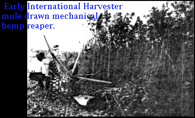

|  |
| |
“Flax and Hemp: From the Seed to the Loom” was published in the February 1938 issue of Mechanical Engineering magazine. It was originally presented at the Agricultural Processing Meeting of the American Society of Mechanical Engineers in New Brunswick, NJ, of February 26, 1937, by the Process Industries Division.
This country imports practically all of its fibers except cotton. The Whitney gin, combined with improved spinning methods, enabled this country to produce cotton goods so far below the cost of linen that linen manufacture practically ceased in the United States. We cannot produce our fibers at less cost than can other farmers of the world. Aside from higher cost of labor, we do not get as large production. For instance, Yugoslavia, which has the greatest fiber production per acre in Europe, recently had a yield of 883 lbs. Comparable figures for other countries are Argentina, 749 lbs.; Egypt, 616 lbs.; and India, 393 lbs.; while the average yield in this country is 383 lbs.
To meet world competition profitable, we must improve our methods all the way from the field to the loom.
Flax is still pulled up by the roots, retted in a pond, dried in the sun, broken until the fibers separate from the wood, then spun, and finally bleached with lye from wood ashes, potash from burned seaweed, or lime. Improvements in tilling, planting, and harvesting mechanisms have materially helped the large farmers and, to a certain degree, the smaller ones, but the processes from the crop to the yarn are crude, wasteful, land injurious. Hemp, the strongest of the vegetable fibers, gives the greatest production per acre and requires the least attention. It not only requires no weeding, but also kills off all weeds and leaves the soil in splendid condition for the following crop. This, irrespective of its own monetary value, makes it a desirable crop to grow,
In climates and cultivation, its requisites are similar to flax and, like flax, should be harvested before it is too ripe. The best time is when the lower leaves on the stalk wither and the flowers shed their pollen.
Like flax, the fibers run out where the leaf stems are on the stalks and are made up of laminated fibers that are held together by pectose gums. When chemically treated like flax, hemp yields a beautiful fiber so closely resembling flax that a high-power microscope is needed to tell the difference — and only then because in hemp, some of the ends are split. Wetting a few strands of fiber and holding them suspended will definitely identify the two because, upon drying, flax will be found to turn to the right or clockwise, and hemp to the left of counterclockwise.

Early International Harvester mule draw mechanical hemp reaper provided a tremendous savings in human labor. Mechanical harvesting was a major step in making American hemp a competitive natural fiber.
Before [World War I], Russia produced 400,000 tons of hemp, all of which is still hand-broken and hand-scutched. They now produce half that quantity and use most of it themselves, as also does Italy from whom we had large importations.
In this country, hemp, when planted one bu. per acre, yields about three tons of dry straw per acre. From 15 to 20 percent of this is fiber, and 80 to 85 percent is woody material. The rapidly growing market for cellulose and wood flour for plastics gives good reason to believe that this hitherto wasted material may prove sufficiently profitable to pay for the crop, leaving the cost of the fiber sufficiently low to compete with 500,000 tons of hard fiber now imported annually.
Hemp being from two to three times as strong as any of the hard fibers, much less weight is required to give the same yardage. For instance, sisal binder twine of 40-lb. tensile strength runs 450 ft. to the lb. A better twine made of hemp would run 1280 ft. to the lb. Hemp is not subject to as many kinds of deterioration as are the tropical fibers, and none of them lasts as long in either fresh or salt water.
While the theory in the past has been that straw should be cut when the pollen starts to fly, some of the best fiber handled by Minnesota hemp people was heavy with seed. This point should be proved as soon as possible by planting a few acres and then harvesting the first quarter when the pollen is flying, the second and third a week or ten days apart, and the last when the seed is fully matured. These four lots should be kept separate and scutched and processed separately to detect any difference in the quality and quantity of the fiber and seed.
Several types of machine are available in this country for harvesting hemp. One of these was brought out several years ago by the International Harvester Company. Recently, growers of hemp in the Middle West have rebuilt regular grain binders for this work. This rebuilding is not particularly expensive and the machines are reported to give satisfactory service.
 International hemp harvester cut the hemp and laid it out in thin layered rows to begin the natural dew retting process near Mason City, Iowa.
International hemp harvester cut the hemp and laid it out in thin layered rows to begin the natural dew retting process near Mason City, Iowa.
Degumming of hemp is analogous to the treatment given flax. The shards probably offer slightly more resistance to digestion. On the other hand, they break down readily upon completion of the digestion process. And excellent fiber can, therefore, be obtained from hemp also. Hemp, when treated by a known chemical process, can be spun on cotton, wool, and worsted machinery, and has as much absorbance and wearing quality as linen.
Several types of machines for scutching the hemp stalks are also on the market. Scutch mills formerly operating in Illinois and Wisconsin used the system that consisted of a set of eight pairs of fluted rollers, through which the dried straw was passed to break up the woody portion. From there, the fiber with adhering shards — or hurds, as they are called — was transferred by an operator to an endless chain conveyor. This carries the fiber past two revolving single drums in tandem, all having beating blades on their periphery, which beat off most of the hurds as well as the fibers that do not run the full length of the stalks. The proportion of line fiber to tow is 50 percent each. Tow or short tangled fiber then goes to a vibrating cleaner that shakes out some of the hurds. In Minnesota and Illinois, another type has been tried out. This machine consists of a feeding table upon which the stalks are placed horizontally. Conveyor chains carry the stalks along until they are grasped by a clamping chain that grips them and carries them through half of the machine.
A pair of intermeshing lawnmower-type beaters are placed at a 45-degree angle to the feeding chain and break the hemp stalks over the sharp edge of a steel plate, the object being to break the woody portion of the straw and whip the hurds from the fiber. On the other side and slightly beyond the first set of lawnmower beaters is another set, which is placed 90-degrees from the first pair and whips out the hurds.
The first clamping chain transfers the stalks to another to scutch the fiber that was under the clamp at the beginning. Unfortunately, this type of scutcher makes even more tow than the so-called Wisconsin type. This tow is difficult to reclean because the hurds are broken into long slivers that tenaciously adhere to the fiber.
Another type passes the stalks through a series of graduated fluted rollers. This breaks up the woody portion into hurds about 3/4 inch long, and then passes on through a series of reciprocating slotted plates working between stationary slotted plates.
Adhering hurds are removed from the fiber which continues on a conveyor to the baling press. Because no beating of the fiber against the grain occurs, this type of scutcher makes only line linen. This is then processed by the same methods as those for flax.
Paint and lacquer manufacturers are interested in hempseed oil which is a good drying agent. When markets have been developed for the products now being wasted, seeds and hurds, hemp will prove for the farmer and the public, the most profitable and desirable crop that can be grown, and one that can make American mills independent of importations.
Recent floods and dust storms have given warnings against the destruction of timber. Possibly, the hitherto waste products of flax and hemp may yet meet a good part of that need, especially in the plastic field which is growing by leaps and bounds.
the authorized on-line version of Jack Herer’s “The Emperor Wears No Clothes”
| previous page | Chapter 3 | next page |
|
 |
 |
 |
 |